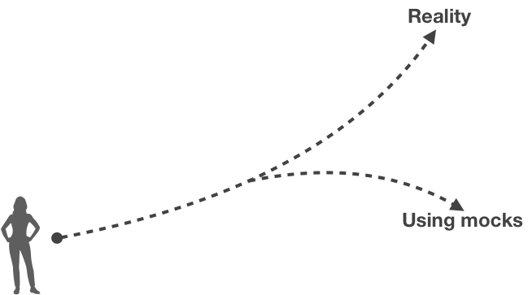

Effective Frontend Testing
Maxence Poutord - @_maxpou
Slides, links, etc.
maxpou.fr/speaking/
👋 Hey I'm Max
- 👨🏼‍💻 Sr. Frontend Engineer @VSware (Vue.js)
- 💠Digital Nomad & âœˆï¸ Serial Traveler
- 🺠Beer appreciator
Effective Frontend Testing
Maxence Poutord - @_maxpou
Why not to test?
- ⏳ "We don't have time to test!"
- 🌠"Test slow me down!" (creation + maintenance)
- 🤷‍♂️ "We don't know how to test and what to test!"
💪 Why we need test
- 🤗 Confidence
- 📖 Document codebase
- 👊 Helps to write better code
- 💸 Reduce maintenance cost
- 🻠Deploy to prod on Friday? Why not!
Testing pyramid
Testing in reality
Testing pyramid
...but...

Testing Trophy

© Kent C. Dodds
Static Testing
ESLint
Yes I know it can be annoying... but it catches:
- 👠dumb errors
(== instead of ===, unused variables...) - 👠avoid steril debates / bikeshedding
(tab vs space, semicolons...)
➡ Helps to focus on what really matter ❤️
👨🏻‍💼 easily extendable - i.e. companies internal rules
Flow
Unit tests
Tips: use Jest
Because using 3 packages for testing is confusingExample
Method AAA - Arrange-Act-Assert
How to test component?
Treat your component as a black box:
- props
- events (onClick, onSelect...)
- lifecycle events (mounted, destroyed...)
- event emitted
- output (DOM)
- props pass to subcomponents
- Internal state (data, computed properties)
👉 if public API doesn't change, we should refactor component without changing tests!
Definition of a good test
- 🟠Dead simple
- ⚡️ Lightning fast (nobody like to wait!)
- 🤯 Doesn't test external library
- 🛌 Cover the most common usages
Code Coverage
example of report
How code coverage works is generated?
How much?
💩 Code coverage bullshit
High coverage !== bug proof
💩 Code coverage bullshit
💩 Code coverage bullshit
function foo(a, unitTest = false) {
// code
if (weirdAndHardToConditionToTest || unitTest) {
// code
}
return bar;
}
😳 Testing privates functions
...⏱ Be careful with metrics
cc is good but is JUST one metric.📸 Snapshot testing
Example
const vatCalculator = require('./vatCalculator')
it('return the expected VAT', () => {
const menu = [
{ item: '🍺', price: 3 },
{ item: '🍔', price: 5.5 }
]
console.log(vatCalculator(menu))
});
// 3.5
Example
const vatCalculator = require('./vatCalculator')
it('return the expected VAT', () => {
const menu = [
{ item: '🍺', price: 3 },
{ item: '🍔', price: 5.5 }
]
expect(vatCalculator(menu)).toBe(3.55)
});
Example
const vatCalculator = require('./vatCalculator')
it('return the expected VAT', () => {
const menu = [
{ item: '🍺', price: 3 },
{ item: '🍔', price: 5.5 }
]
expect(vatCalculator(menu)).toMatchSnapshot()
});
// Jest Snapshot v1, https://goo.gl/fbAQLP
exports[`return the expected VAT 1`] = `3.5`;

👠Good usecase
it('should render correctly', () => {
const wrapper = shallowMount(Alert, {
propsData: {
message: 'Test message',
},
});
expect(wrapper.html()).toMatchSnapshot();
});
exports[`Alert.vue should render correctly 1`] = `
"
Test message
"
`;
Misconceptions
- 👀 Snapshot testing is NOT visual regression testing
- 💁🏻‍♀️ Not only for DOM testing!!!
- 🙅‍♂️ Purpose is not to replace existing assertions.
⡠lazy way to provide test where there's not! - 👠Don’t fall into the temptation of quickly update snapshot without checking the real change!
🤔 Huge Snapshot?
- 🎍 Tests are about confidence
- 🙅‍♀️ Nobody like to review huge snapshots
- 👠Use something else! (or
shallowMount)
👌 eslint: jest/no-large-snapshots (default: 12 lines)
Integration test

Example in Vue.js
import { mount, createLocalVue } from '@vue/test-utils'
import VueRouter from 'vue-router'
const localVue = createLocalVue()
localVue.use(VueRouter)
localVue.use(Vuex)
const router = new VueRouter()
const store = new Vuex.Store({
state: {},
})
mount(Component, {
localVue,
router,
store,
})
About: Async tests
test('should render an page with data', async () => {
expect.assertions(2)
const wrapper = mount(StudentList, {
localVue,
router,
store,
sync: false,
})
await flushPromises()
expect(wrapper.html()).toMatchSnapshot()
// extra security (avoid empty table in snapshot)
expect(wrapper.text()).toContain('Ralph Wiggum')
})
const flushPromises = () => new Promise(resolve => setTimeout(resolve));
Mocks
- 👠Mocks sucks 
- 🤠Ok for:
- External calls (HTTP GET/POST/...)
- Browsers API (local/session storage, navigator...)
Mount vs. ShallowMount
Working together
The importance of automation
👌 Following cc evolution
Low coverage on your team?
Totem Team
Don't forget...
we write tests to catch bugs 🐛
If your test is red,
don't delete it, fix it!
// it('should...', () => {
// expect(actions.resetStore).toHaveBeenCalled();
// expect(actions.getXXX).toHaveBeenCalled();
// expect(actions.getYYY).toHaveBeenCalled();
// });
Too many tools?